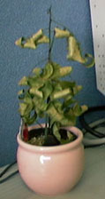

写真提供：Nicolさん
|
写真提供：Nicolさん |
人間サイズの段ボールが愛人，納豆魔人，ドラゴンの子孫，など多大な疾患でお馴染みの悪友平岩が，ボクをテーマにした詩を送ってくれたよ．ここで見られます．ボクにも多大な疾患が！これ見て，ボクは旅立ちを決意しました．それも，日本海を目指して延々と電車に乗るタイプの．平岩，あなたは天才です．ここに完全敗北を宣言します．お願いですから勘弁してください．
最近，ベッドに横たわり，CDをぼんやり視聴している時が一番幸せです．小さなしあわせを守れ！
今日は研究室単位で卒業アルバムの写真を撮るというので強制収容されました．ゼミから雪崩れ込まれた日にはさすがに断われません．学部を卒業した時は一切の撮影に参加せず，いないことになっていたんですけどね．今突然現れると逆に不自然だと思うのですが，どうですか？
やる気なく芝生周辺を見回していると梅雨もあってかキノコが生えていたので，「芝生でみんなてんでバラバラに思い思いの行動を取っているところを撮影しましょう．ボク，このキノコ食べてる役やります」とか言い出そうと思いましたが，素直に従いました．集団意識を守れ！

ものの見事とはこういうことを言うんだね！水はやってたのにね．やっぱり障気のせいとしか考えられないよ！身の回りでは，障気が強すぎて機械が障害を起こすほど．FDDは壊れるわ，愛機PowerBook
Duoはまたもやマザーボード交換の危機！
就職活動で東京方面に一泊した時のこと，ホテル泊は寂しすぎるのでDuoを持参したんだね．寂しさをまぎらわすために電源を入れても「ぶぶっ」とか怪しい音がして電源が入らず．それでこそ！重い役立たずを抱えて会社に出向く羽目に！
ところで，NHK教育を見ながらコレ書いているんですが，相変わらずその番組のドラッギーぶりに感嘆！「おかあさんといっしょ」のwith幼児遊技なんて「自分が大きく自由になった気がぐんぐんしてきた」挙げ句に「象やライオンに変身した」り，「性別交換した」りという意識の解放が歌詞のテーマ！みんなテレタビーズなんかに現を抜かしている場合じゃないですよ！
そんなわけで，ようやく復活なので，ぼちぼちいきます．お楽しみに！(オレが)